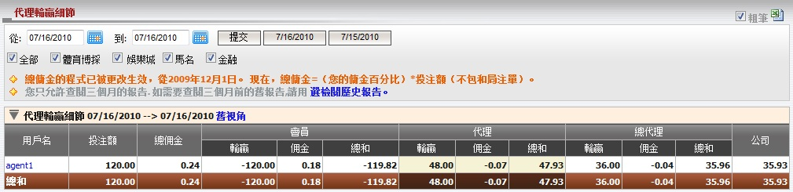

代理輸贏細節
定義:
這份報告涵蓋了所有在代理輸贏界面的信息。

圖 1.1
用詞註解:
-
投注額: 會員總投注數額。
- 總佣金: 總代理從上線處可能得到的最高佣金數額。
- 會員輸贏: 會員輸贏的數額。
- 會員佣金: 會員從代理處得到的佣金數額。
- 會員總和: 會員包括佣金的總輸贏數額。
- 代理輸贏: 代理基於佔成數的輸贏數額。
- 代理佣金: 扣除會員佣金後, 總代理支付予代理的佣金數額。
- 代理總和: 代理包括佣金的總輸贏數額。
- 總代理輸贏: 總代理基於佔成數的輸贏數額。
- 總代理佣金: 扣除代理佣金後, 總代理從上線處收到的佣金數額。
- 總代理總和: 總代理包括佣金的總輸贏數額。
- 公司: 總代理需支付予或從上線處接收到的總數額。
您也可以點擊舊視角鏈接以查看舊視角的代理輸贏細節頁面 (圖1.2)。
新舊視角的差異在於代理佣金, 代理總和的信息顯示。

圖 1.2
用詞註解:
-
代理佣金: 代理從上線處收到的佣金數額 (未扣除會員佣金)。
- 代理總和: 代理從總代理處收到或支付的總金額。